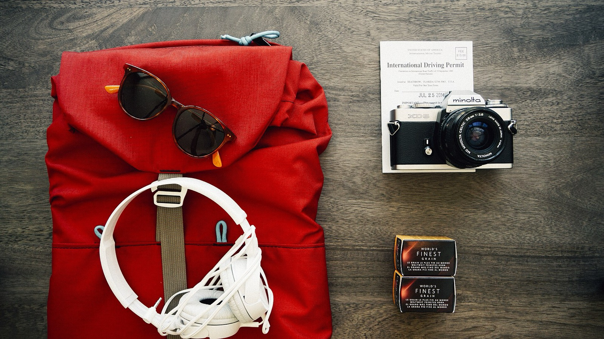
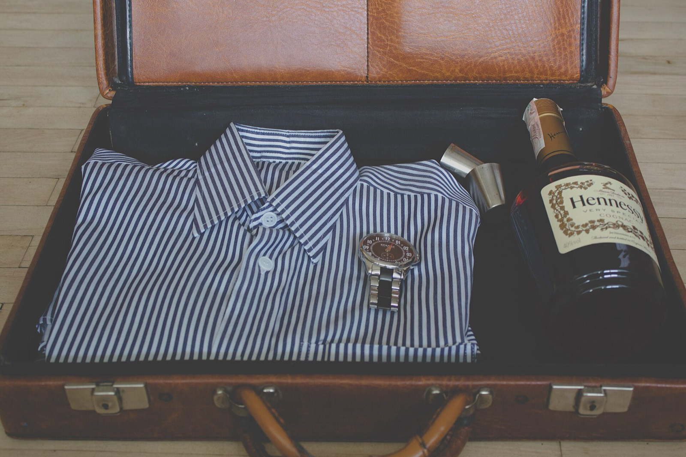

10 jours, 1 sac, zéro regret
Le test qui te dit en 3 minutes si ton sac est le bon, avant d'arriver à l'aéroport.

Le volume
À une condition : t'interdire le « au cas où ». Un sac plein se porte une heure ; un sac trop grand se remplit tout seul.
Le volume se décide avant de poser quoi que ce soit sur le lit : choisis le sac d'abord, remplis-le ensuite, jamais l'inverse.
Le poids
Le poids à vide compte autant que le contenu : une valise rigide pèse déjà près de trois fois un sac cabine, avant d'avoir mis la moindre chaussette.
Retiens surtout l'écart entre vide et plein : c'est lui que ton dos sentira.
| Sac | Vide | Plein |
|---|---|---|
| Cabine | 1,1 kg | 8 kg |
| Sac à dos 40 L | 1,4 kg | 11 kg |
| Valise rigide | 3,2 kg | 18 kg |
Deux moments
Au jour 1, dans le hall de départs, ton sac te paraît léger. Au jour 6, sur le sentier, chaque kilo se compte.
C'est le même sac. Ce qui a changé, c'est le temps que tu passes à le porter.


Au jour 6, chaque kilo se compte.
Les erreurs
Elles ont toutes la même cause : on prépare son sac comme pour le premier jour.

1. Trop de chaussures Deux paires suffisent : celle qui marche, celle qui se montre.
2. Pas de poche accessible Passeport et chargeur doivent se prendre sans tout ouvrir.
3. Le sac neuf le jour J Un sac se règle avant, pas dans la file d'embarquement.
Le test
Quelle est la bonne règle ?
Contenu d'exemple. Photos libres de droits :
Clothes-travel-voyage-backpack — www.Pixel.la Free Stock Photos — CC0
Mountain hiker (Unsplash) — Sujitkun Khantayana parkkun — CC0
Packing for a business trip (Unsplash) — Angelina Litvin — CC0
Vilnius airport departures hall — Sdkb — CC BY-SA 4.0
Hiker in the Mountains — GlacierNPS — Public domain